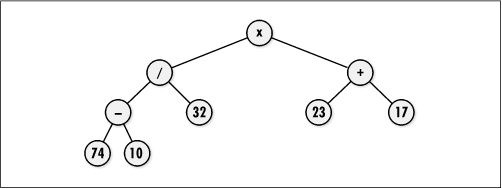
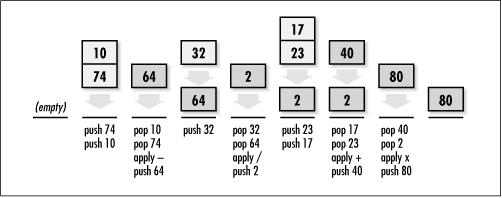

9.4 Binary Tree Example: Expression
Processing
One intuitive way to process arithmetic
expressions with a computer is using an expression tree. An expression tree
is a binary tree consisting of nodes containing two types of
objects: operators and terminal values. Operators are objects that have
operands; terminal values are objects that have no
operands.
The idea behind an expression tree is simple:
the subtrees rooted at the children of each node are the
operands of the operator stored in the parent (see Figure
9.5). Operands may be terminal values, or they may be
other expressions themselves. Expressions are expanded in
subtrees; terminal values reside in leaf nodes. One of the
nice things about this idea is how easily an expression tree
allows us to translate an expression into one of three common
representations: prefix, infix, and postfix. To obtain these
representations, we simply traverse the tree using a preorder, inorder, or postorder
traversal.
Traversing the tree in Figure
9.5 in preorder, for example, yields the prefix expression
x / - 74 10 32 + 23 17. To evaluate a prefix expression, we
apply each operator to the two operands that immediately
follow it. Thus, the prefix expression just given is evaluated
as:
( x ( / ( - 74 10 ) 32 ) ( + 23 17 ) ) =
80
Infix expressions
are the expressions we are most familiar with from
mathematics, but they are not well suited to processing by a
computer. If we traverse the tree of Figure
9.5 using an inorder traversal, we get the infix
expression 74 - 10 / 32 x 23 + 17. Notice that one of the
difficulties with infix expressions is that they do not
inherently identify in which order operations should be
performed, whereas prefix and postfix expressions do. However,
we can remedy this situation in an infix expression by
parenthesizing each part of the expression as we traverse it
in the tree. Fully parenthesized, the previous infix
expression is evaluated as:
( ( ( 74 - 10 ) / 32 ) x ( 23 + 17 ) ) =
80
Postfix expressions
are well suited to processing by a computer. If we traverse
the tree of Figure
9.5 in postorder, we get the postfix expression 74 10 - 32
/ 23 17 + x. To evaluate a postfix expression, we apply each
operator to the two operands immediately preceding it. Thus,
the postfix expression just given is evaluated as:
( ( ( 74 10 - ) 32 /) ( 23 17 + ) x ) =
80

One reason postfix expressions are well
suited to computers is that they are easy to evaluate with an
abstract
stack machine, an abstraction used by compilers and
hand-held calculators. To process a postfix expression using
an abstract stack machine, we proceed as follows. First, we
move from left to right through the expression, pushing values
onto the stack until an operator is encountered. Next, the
operands required by the operator are popped, the operator is
applied to them, and the result is pushed back on the stack.
This procedure is repeated until the entire expression has
been processed, at which point the value of the expression is
the lone item remaining on the stack (see Figure
9.6).

Example
9.3 illustrates how to produce the prefix, infix, and
postfix representations of an expression stored in an
expression tree. For this, three functions are provided, preorder,
inorder, and postorder, which traverse a binary tree in
preorder, inorder, and postorder, respectively. Each function
accepts two arguments: node and
list.
To begin a traversal, we set
node to the root node of the expression tree
we wish to traverse. Successive recursive calls set
node to the node at the top of the subtree
about to be traversed. On the initial call to each function,
we also pass into list an empty linked list
already initialized with list_init. For each of the
traversals, nodes are placed into the list in the order they
are encountered. When the initial call in the recursion
returns, list contains the preorder, inorder,
or postorder listing of the nodes, as appropriate. Notice how a recursive implementation of
these traversals nicely models the definitions presented
earlier in the chapter.
Example 9.3.
Implementation of Functions for Traversing a Binary Tree /*****************************************************************************
* *
* ------------------------------ traverse.c ------------------------------ *
* *
*****************************************************************************/
#include "list.h"
#include "traverse.h"
/*****************************************************************************
* *
* ------------------------------- preorder ------------------------------- *
* *
*****************************************************************************/
int preorder(const BiTreeNode *node, List *list) {
/*****************************************************************************
* *
* Load the list with a preorder listing of the tree. *
* *
*****************************************************************************/
if (!bitree_is_eob(node)) {
if (list_ins_next(list, list_tail(list), bitree_data(node)) != 0)
return -1;
if (!bitree_is_eob(bitree_left(node)))
if (preorder(bitree_left(node), list) != 0)
return -1;
if (!bitree_is_eob(bitree_right(node)))
if (preorder(bitree_right(node), list) != 0)
return -1;
}
return 0;
}
/*****************************************************************************
* *
* -------------------------------- inorder ------------------------------- *
* *
*****************************************************************************/
int inorder(const BiTreeNode *node, List *list) {
/*****************************************************************************
* *
* Load the list with an inorder listing of the tree. *
* *
*****************************************************************************/
if (!bitree_is_eob(node)) {
if (!bitree_is_eob(bitree_left(node)))
if (inorder(bitree_left(node), list) != 0)
return -1;
if (list_ins_next(list, list_tail(list), bitree_data(node)) != 0)
return -1;
if (!bitree_is_eob(bitree_right(node)))
if (inorder(bitree_right(node), list) != 0)
return -1;
}
return 0;
}
/*****************************************************************************
* *
* ------------------------------- postorder ------------------------------ *
* *
*****************************************************************************/
int postorder(const BiTreeNode *node, List *list) {
/*****************************************************************************
* *
* Load the list with a postorder listing of the tree. *
* *
*****************************************************************************/
if (!bitree_is_eob(node)) {
if (!bitree_is_eob(bitree_left(node)))
if (postorder(bitree_left(node), list) != 0)
return -1;
if (!bitree_is_eob(bitree_right(node)))
if (postorder(bitree_right(node), list) != 0)
return -1;
if (list_ins_next(list, list_tail(list), bitree_data(node)) != 0)
return -1;
}
return 0;
} |